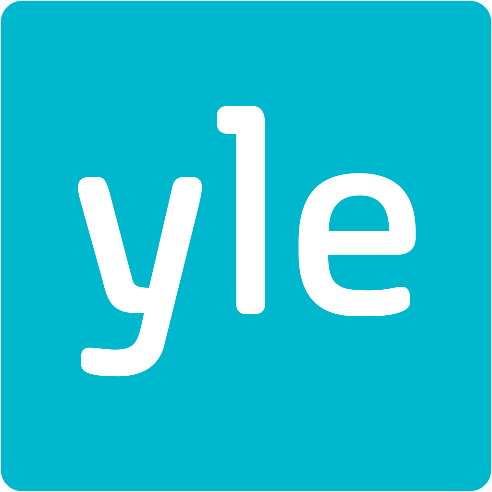

class: center, middle # Best <span class="highlight">show cases</span> from Yle  Teemo Tebest, <span class="highlight">@teelmo</span> --- class: left, middle # Teemo Tebest, Yle * <span class="highlight">Data Journalist</span> * Background in web development and information visualization * Founding member of Yle's datadesk since 2013 ```javascript require('JS, HTML5, PHP, Python, full-stack, MongoDB, GIS, network analysis'); ``` * Twitter: <a href="http://twitter.com/teelmo"><span class="highlight">@teelmo</span></a> * Homepage: <a href="teelmo.info"><span class="highlight">teelmo.info</span></a> --- class: full, middle <div style="position: absolute; width: 100%; text-align: center; text-shadow: 1px 1px 1px #000;"><h1 style="border:0; text-transform: uppercase;"><span class="highlight">What I Actually Do</span></h1></div> <img src="img/teemo.png" style="width: 100%;" /> --- class: full, middle <img src="img/plusdesk.png" style="width: 100%;" /> --- class: left, middle # Plus Desk at Yle News <img src="img/hahmottelu.png" style="width: 250px; float: right; padding-left: 30px; margin-right: -70px; margin-top: 10px;"> * Interactives, data journalism, features * We make online stories in <span class="highlight">co-operation</span> with other teams * More <span class="highlight">bigger</span> and <span class="highlight">investigative</span> projects, less fast-ones * 350 stories in 2013, 140 in 2017 * Half of <span class="highlight">the most read stories</span> at Yle come from Plus Desk --- class: left, middle # Succesful data story: <span class="highlight">3 examples</span> 1. <span class="highlight">Retirement age</span> Calculator 2. <span class="highlight">Municipality</span> Radar 3. <span class="highlight">Cab 1080</span> Trick ```javascript if (Motivation === true) { if (Implemantion === true) { return Outcome } } ``` --- class: left, middle # How many <span class="highlight">threes</span>? --- class: left, middle # <span class="highlight">20</span> <img src="img/kolmoset_2.png" alt="" style="width: 600px; style:inline;"/> --- class: left, middle # <span class="highlight">Story</span> When Can You Retire And For How Long <p><span class="highlight">Motivation</span> Retirement system reform</p> <p><span class="highlight">Implementation</span> Embedded calculator</p> <p><span class="highlight">Outcome</span> One of the most read stories in 2016</p> <div style="float: right"><a href="https://docs.google.com/spreadsheets/d/1Gj3uqUzWOUeDGamxc8Ig_Owu-EfZzzs-MaLSLESf0C4/edit#gid=1128173612" target="_blank">» data</a></div><br /> <div style="float: right"><a href="http://yle.fi/uutiset/3-9273402" target="_blank">» story</a></div><br /> <div style="float: right"><a href="https://dashboard.yle.fi/article/3-9273402" target="_blank">» numbers</a></div> --- class: left, middle # One of most read stories in 2016, <span class="highlight">Why?</span> * Calculator <span class="highlight">placed on top</span> of the article * Had a <span class="highlight">default result</span> * Easy to use * Simple yet <span class="highlight">“Suprising”</span> message * <span class="highlight">Shareable</span> result, over 80,000 FB actions * Funny → <span class="highlight">Memorable</span> --- class: left, middle # Challenges / Obstacles * From <span class="highlight">Excel</span> to story * <span class="highlight">Two datasets</span> → pick more relevant * Use of <span class="highlight">understandable language</span> and terms * Getting the small <span class="highlight">details</span> just right * <span class="highlight">KISS</span> or KTMSS (keep the message simple stupid) --- class: left, middle # <span class="highlight">Story</span> What is the status of your municipality <p><span class="highlight">Motivation</span> Upcoming elections</p> <p><span class="highlight">Implementation</span> Municipality Radar</p> <p><span class="highlight">Outcome</span> Noda Awards '17 nominee</p> <div style="float: right"><a href="https://docs.google.com/spreadsheets/d/15M_MyAudZXCMASTlbP4SSA3BTQFlw7RRxVwa47uDcEs/edit#gid=0" target="_blank">» data</a></div><br /> <div style="float: right"><a href="https://yle.fi/uutiset/3-9490180" target="_blank">» story</a></div><br /> <div style="float: right"><a href="https://dashboard.yle.fi/article/3-9192528" target="_blank">» numbers</a></div> --- class: left, middle # Noda Awards '17 nominee, <span class="highlight">Why?</span> * Quick <span class="highlight">Overview</span> → <span class="highlight">Details</span> on Demand * <span class="highlight">Personalized</span> and <span class="highlight">Familiar</span> feel * Municipality arms, Subtitle, Background map, Street view, Municipality text * Was adopted by municipalities and by public * <a href="https://twitter.com/KjJussi/status/791556788382490624" target="_blank">1</a>, <a href="https://twitter.com/KjJussi/status/791556663765532672" target="_blank">2</a>, <a href="https://twitter.com/KjJussi/status/791556496685490177" target="_blank">3</a>, <a href="https://twitter.com/KjJussi/status/791556345795321856" target="_blank">4</a>, <a href="https://twitter.com/KjJussi/status/791556231563452416" target="_blank">5</a>, <a href="https://twitter.com/KjJussi/status/791551071890055168" target="_blank">6</a>, <a href="https://twitter.com/tuomas_lohi/status/791633873994145792" target="_blank">7</a> * <a href="http://yle.fi/uutiset/3-9252893" target="_blank">Data and process was opened</a> --- class: left, middle # Challenges / Obstacles * <span class="highlight">Getting data</span> for current municipalities * Merging various data sources and formats into one sheet * Learning <span class="highlight">statistical analysis</span> and standard deviation * Getting <span class="highlight">unified texts</span> for municipality and handling updates * <span class="highlight">Finishing and polishing</span> * Google Maps Api usage limitations * Lack of HTTPS → No automated location --- class: left, middle # <span class="highlight">Story</span> Dream Of A Single Trick <p><span class="highlight">Motivation</span> Olympic games</p> <p><span class="highlight">Implementation</span> Single view story</p> <p><span class="highlight">Outcome</span> Unique story</p> <div style="float: right"><a href="https://drive.google.com/drive/u/0/folders/12BZ-gUTejdLcpKZgTvXGaUvz9o5aq79k" target="_blank">» manuscript</a></div><br /> <div style="float: right"><a href="https://yle.fi/uutiset/3-10078638" target="_blank">» story</a></div><br /> <div style="float: right"><a href="https://dashboard.yle.fi/article/3-10078638" target="_blank">» numbers</a></div> --- # Unique story, <span class="highlight">Why?</span> * Less text, more <span class="highlight">visual</span> * <span class="highlight">Infographic video</span>, really showed what happens * Very <span class="highlight">focused view</span>, one single trick * Found <span class="highlight">new audiences</span>, not tradionally interested in sports * Got positive <a href="https://docs.google.com/forms/d/15aYIqDKXlo7IGyC6E4BqM3tjZl0KpUC9r3gAyZJgTtE/edit" target="_blank">feedback</a> --- # Challenges / Obstacles * <span class="highlight">First time</span> we tried this kind of single view story * How to <span class="highlight">navigate</span> in the story * Relation between text and photos * <span class="highlight">Manuscripting</span> * Smooth usage on all devices, <span class="highlight">mobile</span> and desktop * Narroving the length of the content to fit it into screen --- class: center, middle # Thank you! <span class="highlight">Questions?</span> <img src="http://upload.wikimedia.org/wikipedia/commons/thumb/f/f1/Heart_coraz%C3%B3n.svg/1024px-Heart_coraz%C3%B3n.svg.png" alt="" style="width: 300px;"/><br /> Teemo Tebest, <a href="http://twitter.com/teelmo"><span class="highlight">@teelmo</span></a>